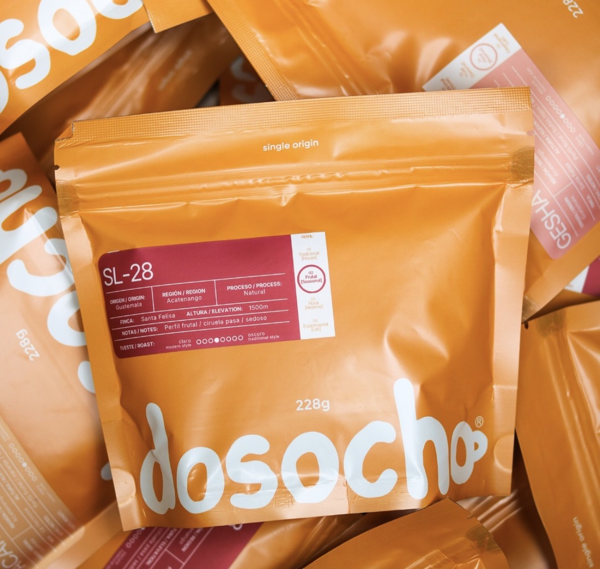

Un perfil balanceado que honra la tradición: notas de chocolate y frutos secos, cultivado a 1800 metros en el corazón de Huehuetenango.

"El Abuelo" nace de una mezcla de Bourbon y Caturra, dos variedades clásicas cultivadas con paciencia en las montañas de Huehuetenango. Es nuestro café de la casa: el que abre la mañana, el que se comparte en la mesa, el que no necesita explicación — solo se disfruta. Cada bolsa de 228 g conserva un perfil redondo y balanceado, con un fondo de chocolate y un cierre suave de frutos secos.
En Finca Vista Hermosa, a 1800 metros sobre el nivel del mar, las neblinas de Huehuetenango maduran el fruto con lentitud. Es una región de contrastes — días cálidos, noches frías — que obliga al café a desarrollarse despacio y concentrar su dulzura.
El proceso lavado preserva la limpieza natural del grano, dejando que el perfil de Bourbon y Caturra se exprese sin interferencias: cuerpo medio, acidez suave y un dulzor que recuerda al chocolate de mesa.
Un perfil versátil que rinde en distintos métodos. Estas son nuestras proporciones sugeridas para empezar.
Cada bolsa representa generaciones de conocimiento agrícola transmitido de padres a hijos. En Vista Hermosa, las familias productoras cuidan cada planta a mano — desde la floración hasta la recolección selectiva del cerezo maduro — para asegurar que solo el mejor café llegue a tu taza.